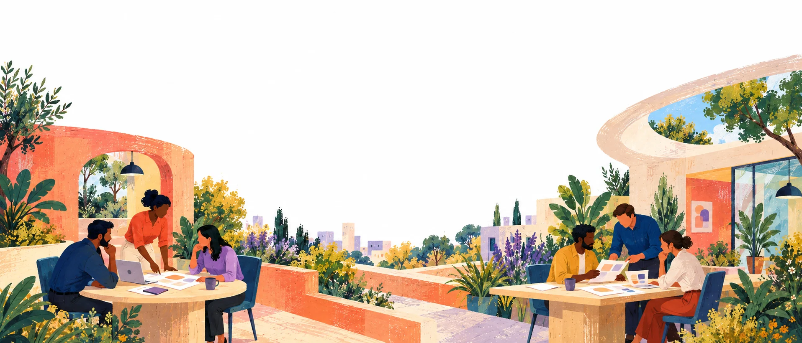

← Solutions
Solution
Product adoption
Propel recruits relevant users, organises real product tasks and brings their feedback into a structured programme. Start with a test cycle, a first-use challenge or a broader activation brief.
Discuss a product programme
Beta testing & user research
Watch how people approach the workflows that matter. We recruit against your user profile, set clear tasks and collect feedback you can use to improve the product.
The work can cover onboarding, usability, feature clarity, documentation and the practical experience of using your product in different contexts.
Product-test task sheet
“Create an account and complete your first project.”
- Participant
- Matched to your user profile
- Steps
- 1. Create an account 2. Complete your first project 3. Note where you hesitate
- Record
- ScreenshotError captureExpected result
- Support
- Where to get help during the task
Product adoption
For adoption programmes, we define the action that represents value: completing a workflow, building with an API or using a feature for a real task. The programme then supports that action through clear onboarding, relevant challenges and follow-up.
If repeat use is part of the goal, we agree how it will be measured. A registration and an active user are different outcomes.
What your team gets
- ✓Participants matched to the audience brief.
- ✓An organised testing or activation plan.
- ✓Structured feedback and agreed activity records.
- ✓A report that connects findings to product and programme decisions.
- ✓An optional follow-on cycle to test improvements or support continued use.
Feedback record
- Workflow
- Onboarding – first project
- Observation
- What the participant tried and where they got stuck
- Evidence
- ScreenshotTask record
- Finding
- Linked to similar observations from other participants
- Decision
- For the product team to agree
Your product team
You define the product questions, provide access and act on the findings. Propel handles recruitment, participant coordination and the agreed feedback process. Together, we decide what needs to happen in the next cycle.
- Your product team
Product questions, access and action on the findings.
→
- Propel
Recruitment, participant coordination and the agreed feedback process.
→
- Together
What needs to happen in the next cycle.
Programme examples
Fertitude
- testers
- 120
- insights
- 500+
- UX improvements
- 17
120 testers helped explore Fertitude's period-tracking experience. The programme generated 500+ insights and informed 17 UX improvements, with 92% tester engagement.
Read the Fertitude story →
Big Cabal Media
- test completion
- 100%
Propel recruited and supported relevant users for TC Insights Pro, collecting product and market feedback with 100% test completion.
Read the Big Cabal Media story →
Plan your product programme
Tell us the product, the audience and the decisions you're trying to make.
Discuss a product programme
